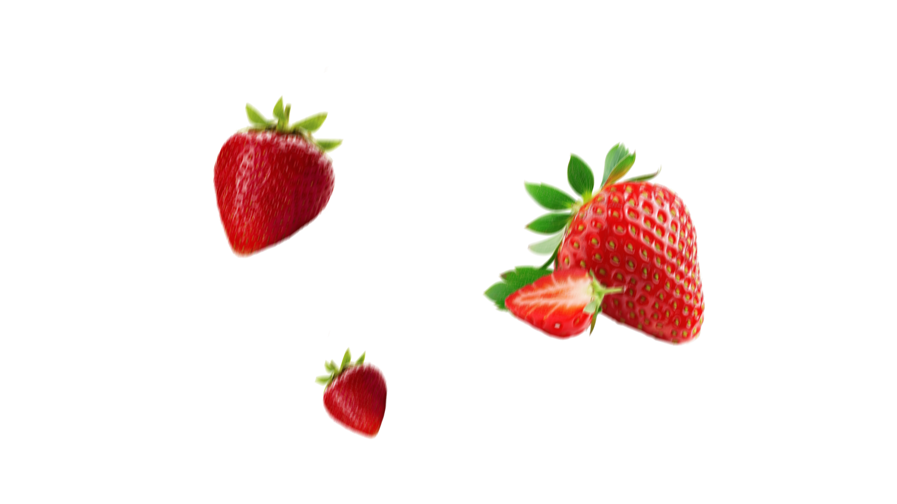
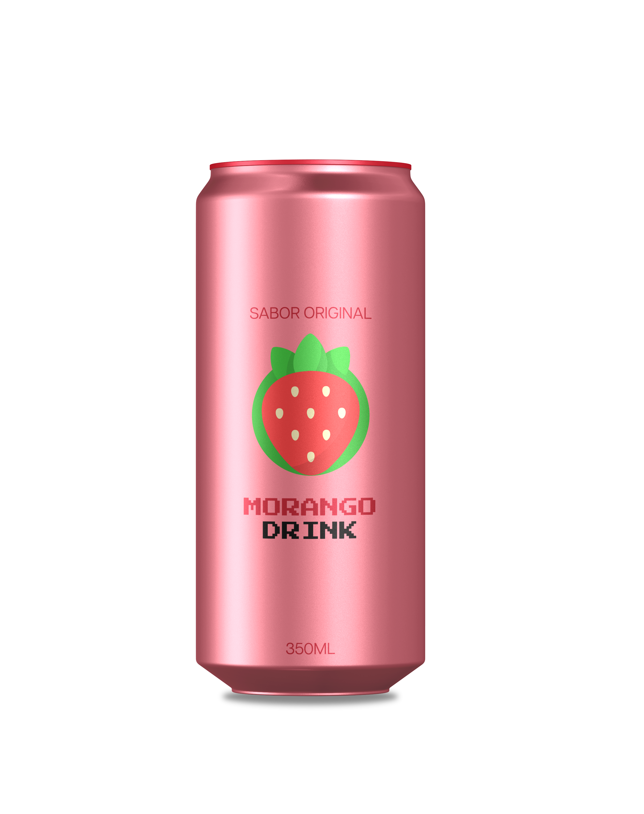
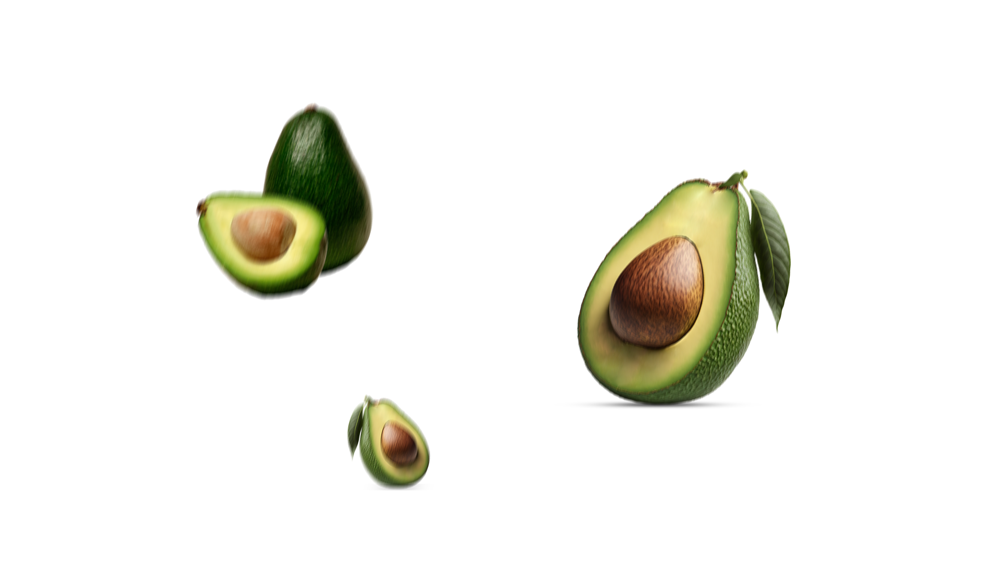
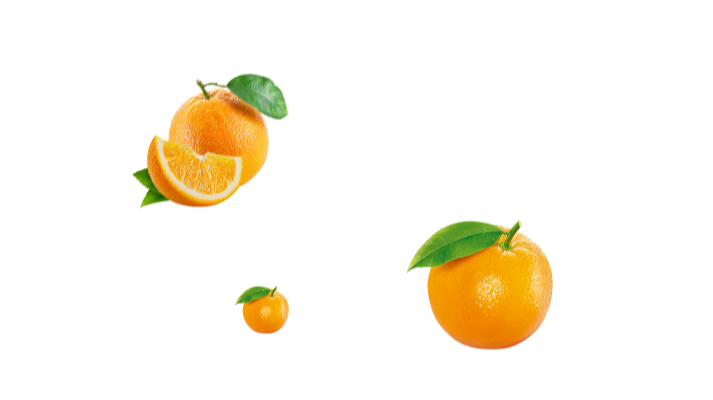
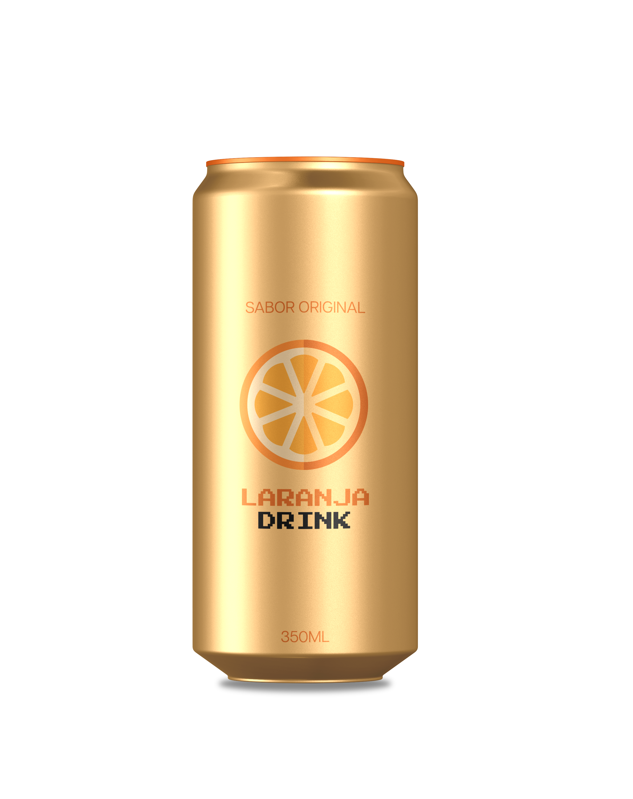

UM NOVO SABOR PARA O SEU DIA
Morango


Frutado. Vibrante. Fora do comum.
UMA COMBINAÇÃO QUE SURPREENDE
Abacate


Original em cada detalhe.
O CLÁSSICO COM UMA NOVA ENERGIA
Laranja


Cítrico. Leve. Cheio de personalidade.
USE AS SETAS PARA EXPLORAR
Sabor Morango, 1 de 3